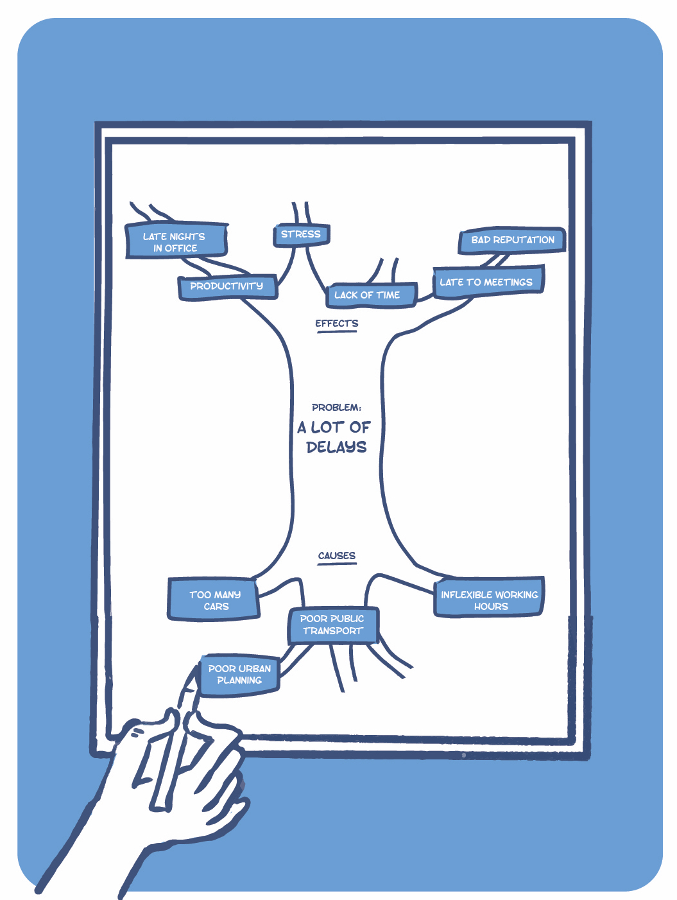

Human Centred Design | FOUNDATION
SCAMPER
30 Min.
About
Ideation can also be about small, incremental tweaks, SCAMPER helps participants explore what those might be through a few simple thought experiments.
Use Cases
- Finding variations to an early design solution.
- Coming up with creative alternative solutions when feeling stuck.
Limitations
This activity is best used when a wide range of ideas have been created and the participants wish to diversify their approach rather than an activity to start from scratch with.


Understand
- In the ‘Substituting’ box participants should think of concepts made possible by substituting or changing a certain part of the concept at hand.
- In the ‘Combining’ box participants should think of concepts made possible by combining the existing concept with another feature, service, product.
- In the ‘Adapting’ box participants should think of concepts made possible by adapting to existing best practices and structures.
- In the ‘Modifying’ box participants should think of concept that emphasise or minimise existing features of the existing design.
- In the ‘Putting’ box participants should think of concepts that place the existing solution in a different context or put it to a different use.
- In the ‘Eliminating’ box participants should try and remove a feature from the existing solution.
- In the ‘Rearranging’ box participants should try switching the sequence or order things are done in.
Step by Step
1. Choose an idea: Each person in the team can choose an idea they would like to expand on.
2. Iterate on the idea: Then fill out the template with that idea in mind resulting in seven variations for each concept participants have chosen.